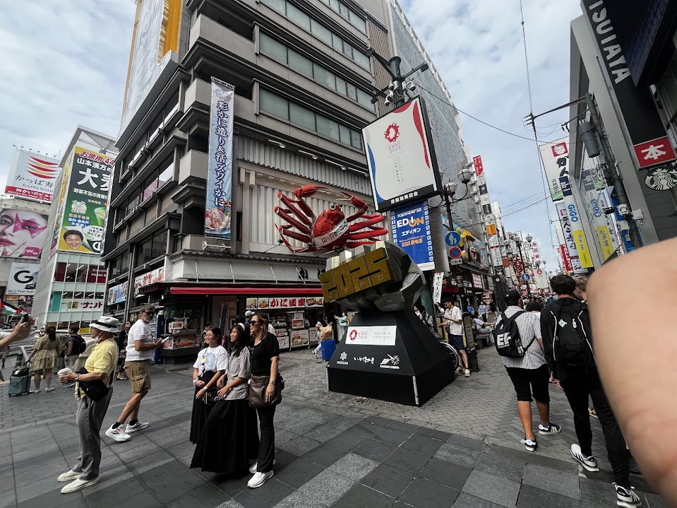
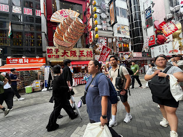
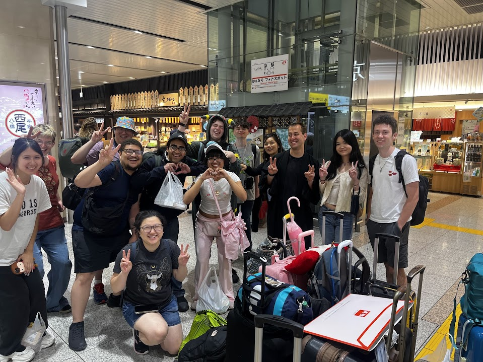
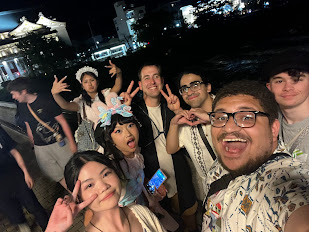

Day 13 – Kyoto, Japan
For our last day in Japan together, the day was sweet and simple. We were told there were no mandatory activities scheduled and were encouraged to venture off and do whatever we wanted. The professors provided a list of recommendations for how we could spend our free time. However, we did have a farewell dinner we were required to attend at around 6:00 p.m., so that served as the deadline for whatever activity I chose to do.
I decided to take the train down to Osaka, as we were close by and I likely wouldn’t have another easy opportunity to visit during the trip. I boarded a train for the hour-and-a-half journey to Osaka with some clear goals in mind: I was on the hunt for retro video game consoles and anything anime-related. After exploring a few shops, I found a Nintendo 64 that was labeled as fully functional, so I decided to buy it. I also picked up a Nintendo 64 game at another store so I could test the console later. This purchase brought my total number of consoles acquired on this trip to two, my first being the Wii I had bought earlier in Akihabara.After successfully finding a new console, I made my way over to Dotonbori, where I was promised one of the most amazing sights of the trip: “The Crab.” I had been told numerous times that this crab was the single best thing I would witness on this trip and that the train ride to Osaka would be worth it just to see it. When I finally arrived, what I saw was a basic animatronic crab that moved slightly. Needless to say, I was not impressed and was thoroughly shocked that someone had gone out of their way just to see that crab sign.
Following what was undoubtedly the biggest disappointment of the trip, I wandered into a bookstore that completely turned things around. I was thoroughly impressed with the sheer size and variety of books and stationery items it carried. The store was called Kinokuniya, and to my excitement, I found limited edition CDs featuring two major fights from my favorite boxing anime, Ashita no Joe. After geeking out over the items I had bought, I made my way back to Kyoto to prepare for our farewell dinner.The dinner was held at an okonomiyaki restaurant, and the atmosphere was both relaxed and enjoyable. There was also a bit of a somber feeling in the air, as it was our last full day together before the majority of the group would either head back to America or split off from Anh and me. The food was delicious, but what stood out most was how fun it was to be with the entire group one last time after such a long and bonding experience.
The final day was short and sweet, and overall, it was a fitting end to the study abroad trip. I walked away having learned a great deal not just through the class itself, but through the people who shared this incredible journey with me

